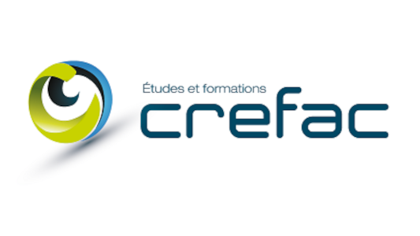

Un outil d’orientation pour identifier les formations les plus adaptées à votre situation, vos responsabilités et vos besoins actuels.
Ce questionnaire vous permet d’identifier les formations CREFAC les plus adaptées à vos enjeux professionnels, syndicaux et organisationnels.
En quelques questions, vous obtiendrez :